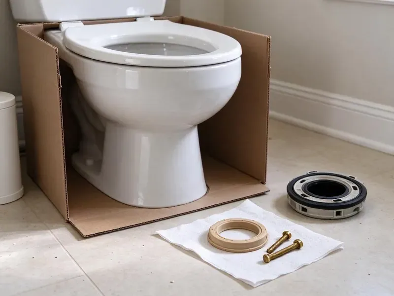

Sink Installation in Bridgeport, CT
Upgrade your home with a professionally installed sink. Our team in Bridgeport, CT ensures a perfect fit and leak-free operation.
- All Sink Styles Installed
- Flexible Scheduling for Installs
- Expert Plumbers
- Fast, Reliable Service

Ready for a New Bathroom Sink? Book Your Install in Bridgeport, CT.
Contact us today for a free estimate and enjoy top-notch plumbing service.
Skilled Sink Installation for Homes in Bridgeport, CT
At GLV Plumbing, we understand that a properly installed sink is essential for both looks and function. We handle all types of installations, from simple drop-ins to complex undermount and wall-mounted units, ensuring every connection is watertight and durable for Bridgeport properties.
Our expertise includes:
- Precise fitting for all sink types
- Kitchen and bathroom sink installs
- Garbage disposal and faucet integration

Additional Bathroom Plumbing Services in Bridgeport, CT
From toilets to showers, our bathroom plumbing team in Bridgeport, CT repairs, installs, and replaces every fixture with clean, code-compliant work.


Customers
Why Choose GLV Plumbing for Sink Installation in Bridgeport, CT?
Our team is committed to delivering clean, efficient, and reliable installations, so your new sink performs flawlessly for years to come.
- Transparent Pricing, You will receive a clear, upfront quote with no hidden fees for your sink installation project.
- Quality Workmanship, Our installations are always precise and up to the highest industry standards, heading off future issues.
- Foundation Integrity, We take care to prevent leaks that could soak subfloors or affect your home's foundation over time.
Citywide Coverage
No matter if you are in North, South, East, or West Bridgeport, our skilled technicians are ready to assist with your new sink installation project.
Experienced Team
Our team installs sinks from Kohler, American Standard, Toto, Duravit and many specialty makers. We read the spec sheet before we arrive so the drain, overflow and faucet holes all line up.
Safety-First Approach
We test shutoff valves, replace any that leak or stick, and pressure check every connection. Heavy basins are lifted and set safely to protect you, your countertop and our crew.
Trusted Certified Bridgeport Plumbing Services Professionals
At GLV Plumbing, we take pride in providing licensed, certified plumbing services throughout Bridgeport, CT. Backed by recognized industry credentials, our experienced plumbers combine technical skill with genuine customer care. Whether it is repair, installation, or maintenance, we follow strict safety and quality standards to deliver lasting results you can trust.
Call Us Now PHCC Plumbing Contractor Recognition
PHCC Plumbing Contractor Recognition Better Business Bureau (BBB) Accreditation
Better Business Bureau (BBB) Accreditation Angi Certified Pro
Angi Certified Pro ISO 9001 Quality Management Certification
ISO 9001 Quality Management CertificationReliable Sink Installation Services in Bridgeport, CT
Commercial Restroom Sink Installation in Bridgeport
Offices, restaurants and retail spaces need durable lavatories that meet code and stand up to heavy use. We install wall-hung and countertop lavatories, sensor faucets and mixing valves where required. Work is scheduled around your business hours to keep restrooms open. We can also replace several sinks in one visit.

Drop-In Sink Installation in Bridgeport, CT
Drop-in or self-rimming sinks are the most forgiving style and a good choice for laminate counters. We check the cutout, seal the rim with silicone or plumber's putty as the maker specifies, and connect a new pop-up drain. This is often the fastest and most affordable sink installation. It is also a simple way to refresh an older vanity.
Vessel Sink Installation in Bridgeport, CT
Vessel sinks sit on top of the counter, which changes the drain height and faucet requirements. We install the mounting ring, set the bowl level, and use a vessel-specific drain with or without an overflow as the basin requires. We also confirm your faucet is a tall or wall-mount model that reaches past the rim. The trap arm is adjusted so everything lines up under the counter.
Double Vanity Sink Installation in Bridgeport
Adding a second sink means adding a second drain and two more supply lines. We extend the drain with a properly sized fitting, install new stops, and make sure both bowls drain freely without siphoning each other's traps. When the wall needs to be opened, we tell you ahead of time. A double vanity is one of the most requested upgrades in primary bathrooms.
Sink Installation Cost Factors in Bridgeport, CT
A simple drop-in swap costs much less than a new undermount on stone or a vessel sink that needs a drain relocation. Moving the drain, adding a second sink or replacing old galvanized stubs adds labor. We price the plumbing separately from the countertop so you can compare. You will know the full installed cost before we begin.
Utility Sink Installation in Bridgeport
Utility sinks in laundry rooms, garages, or workshops need to be sturdy and correctly installed to handle heavy use. GLV Plumbing installs durable utility sinks, ensuring strong support for the basin and proper drainage for large volumes of water. A large share of homes in Connecticut use private wells, which can be acidic or carry iron, manganese, or radon that call for treatment. We plan for that with solid connections and P-traps that can be easily maintained.
Undermount Sink Installation in Bridgeport
Undermount sinks offer a sleek look and are popular for their easy-to-clean design. Their installation requires precise cutting of countertops and secure mounting from underneath. Our plumbers are experts in creating watertight seals and using appropriate clips and adhesives to ensure the sink is firmly in place, preventing future sagging or leaks that can damage cabinets and subfloors over time.

Commercial Sink Installation in Bridgeport, CT
For businesses in Bridgeport, we provide specialized commercial sink installation for kitchens, restrooms, and industrial applications. This includes multi-compartment sinks, handwashing stations, and specialized fixtures that meet health department regulations and commercial plumbing standards. Our installations are designed for durability and high-volume use, reducing downtime for your business operations.
Sink Installation Near Me in Bridgeport, CT
When you search for 'sink installation near me' in Bridgeport, CT, GLV Plumbing is your reliable local expert. We are deeply familiar with the plumbing throughout the area, from older homes with galvanized pipes to new constructions with PEX and copper.
We also know the local housing stock. Some older homes here may have lead service lines or lead solder on copper pipes, which is worth testing if you have young children. That helps us predict where drains and stubs sit before we open anything, and fewer surprises means a smoother install day.
GLV Plumbing at a Glance
- Licensed and insured plumbers serving Bridgeport, CT
- Same-day appointments and 24/7 emergency response
- Upfront, flat-rate pricing before work begins
- 4.8-star rated by 946+ Connecticut customers
Bridgeport Map
Bridgeport Information
- Population
- 148,028
- Area codes
- 203/475/914
- Service area
- Bridgeport and communities within 40 miles
- Nearby
- Milford, West Haven, Norwalk, New Haven
Proper sink installation is essential in Bridgeport, CT homes to prevent water damage to cabinets and floors. Some older homes here may have lead service lines or lead solder on copper pipes, which is worth checking if you have young children.
Expert Services
Trust our professionals for reliable GLV Plumbing solutions in Bridgeport, CT.
Our Specialized Plumbing Services in Bridgeport, CT
At GLV Plumbing, we provide a complete range of plumbing services across Bridgeport, CT. From leak detection to full system installations, our team ensures fast, precise, and affordable service for both residential and commercial properties. Explore our core services below:


How Our Sink Installation Process Works in Bridgeport, CT
Our sink installation process at GLV Plumbing is designed to be straightforward and stress-free for our Bridgeport customers.
Request a Quote
Call (860) 487-7330 or fill out our online form to schedule an appointment. We will discuss your sink installation needs and provide a straight, upfront estimate.
On-Site Assessment
Our plumber will visit your Bridgeport home to assess the existing setup, take measurements, and confirm the best approach for your new sink installation.
Professional Installation
We carefully remove your old sink, install the new unit, connect all plumbing, and test for leaks. We ensure everything is clean and functional before we leave.
Frequently Asked Questions About Sink Installation in Bridgeport
Installing a drop-in or pedestal sink usually runs $250 to $550 for labor. Undermount and vessel sinks typically cost $350 to $800, and adding a second sink or relocating a drain can push it to $900 to $1,800.
Generally, replacing an existing sink with a similar type does not require a permit in Bridgeport, CT. However, if the installation involves relocating plumbing lines, adding new lines, or significant structural changes, a permit might be necessary. We will let you know if your project requires one and can assist with the permit application process.
Generally, simply replacing an existing sink with a new one of the same type does not need a permit in Connecticut. However, if the installation involves altering the drain or water supply lines, or changing the location of the sink, a plumbing permit may be required. GLV Plumbing can advise you on local code requirements for your specific project.
Signs you may need a new sink include extensive cracking or chipping, widespread rust, persistent leaks that cannot be sealed, significant water damage around the sink basin, or if you are upgrading your home's look. Small leaks or minor clogs can often be repaired, but widespread damage generally warrants replacement.
To prepare for your sink installation, please clear out the cabinet beneath the sink and provide easy access to the work area. If you are supplying the new sink, have it on hand for our plumbers. Clearing the space helps our team work efficiently and safely.
While DIY sink installation is possible, it is often more complex than it appears, especially with ensuring watertight seals, proper drainage, and correct faucet connections. Professional installation by GLV Plumbing ensures the job is done right, preventing costly leaks, water damage, and compliance issues with Connecticut plumbing codes.
Yes, GLV Plumbing stands behind the quality of our workmanship. We offer a warranty on all our sink installation services, covering any issues that may arise due to our installation. Specific warranty details will be provided at the time of service, giving you confidence.
GLV Plumbing stands behind our work with a comprehensive labor warranty on all sink installations. This covers any issues directly related to our installation for a specified period. The warranty on the sink fixture itself will be provided by the manufacturer. We will explain all warranty details before starting any work.
What People Are Saying About Our Plumbing Experts?

Laura S.
I scheduled a water heater replacement, and the team made the process smooth and affordable. The new unit works perfectly, and they cleaned up after completing the job.
Water Heater Replacement · Stamford, CT
Daniel K.
A pipe burst at 11 pm and they actually answered. The plumber showed up within the hour, shut everything down, and had us back to normal the next morning. Could not ask for more.
Emergency Plumbing · Milford, CT
Robert G.
The trenchless sewer replacement saved our front yard. They walked us through the camera inspection footage first so we knew exactly what we were paying for.
Sewer Line Replacement · Danbury, CTSofia M.
Two new toilets installed in one visit, no mess left behind, and the tech even adjusted a faucet he noticed was dripping. Fair pricing and really friendly.
Toilet Installation · Milford, CT
Mark T.
When our office needed drain cleaning, GLV Plumbing provided quick, reliable service. The plumber arrived on time and made sure every drain flowed perfectly before leaving. Very satisfied.
Drain Cleaning · Danbury, CT
Patricia H.
We had a slab leak that two other companies could not find. GLV Plumbing located it in under an hour, explained our options, and the price matched the quote to the dollar.
Slab Leak Repair · Milford, CT